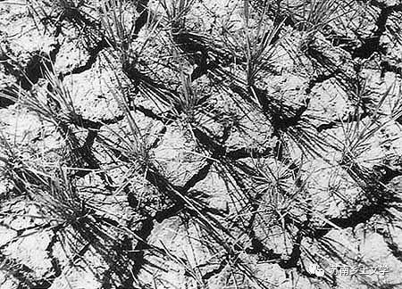
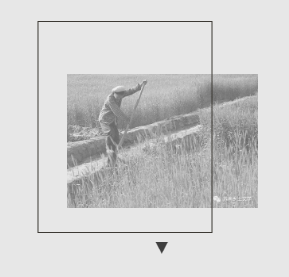
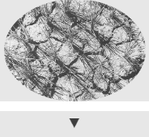
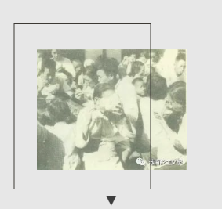

《1934年的逃亡》
一、自然环境与时代背景
1.苏南传统：草垛子堆在门前或者屋里，干草和干柴是重要的生火道具。
我父亲喜欢干草。他的身上一年四季散发着醇厚坚实的干草清香。
我无法解释一个人对干草的依恋，正如同无法解释天理人伦。追溯我的血缘，我们家族的故居也许就有过这种干草，我的八位亲人也许都在故居的干草堆上投胎问世，带来这种特殊的记忆。
2.种植水稻
蒋氏干瘦细长的双脚钉在一片清冷浑浊的水稻田里一动不动。那是关于初春和农妇的画面。
3.竹老婆：明清时候开始流行。农村避暑的一种方法。
她惧怕谈话，很莽撞地把一件竹器夹在双膝间酝酿干活。女人们看清楚那竹器是陈宝年编的竹老婆
4.家鼠
她奇怪陈家的古老家鼠竟然力大无比
注：家鼠是啮齿目鼠科，大家鼠属和小家鼠属中的一些种类的通称。因这些种类主要栖居在城镇、乡村，与人关系密切，故名家鼠。
5.城市化影响乡村
陈宝年一遍遍地给狗崽擦美丽牌香皂，使狗崽头上的狗粪味消失殆尽，发出城市的香味。
经常把嘴里嚼着的口香糖扔给狗吃。
6.农村手工业的发展、农民进城
直到父亲落生，蒋氏也没有收到城里捎来的钱。竹匠们渐渐踩着陈宝年的脚后跟拥到城里去了。一九三四年是枫杨树竹匠们逃亡的年代，据说到这年年底，枫杨树人创始的竹器作坊已经遍及长江下游的各个城市了。
我知道一百三十九个枫杨树竹匠都顺流越过大江进入南方那些繁荣的城镇。就是这一百三十九个竹匠点燃了竹器业的火捻子在南方城市里开辟了崭新的手工业。枫杨树人的竹器作坊水漫沙滩渐渐掀起了浪头。一九三四年我祖父陈宝年的陈记竹器店在城里蜚声一时。
二、传统行为及观念
1.农村人在家分娩
陈宝年唯一目睹过的老大狗崽的分娩情景是否会重现眼前？我的祖母蒋氏曾经是位原始的毫无经验的母亲，精气空空荡荡，而蒋氏的眼睛里跳动着一团火苗，那火苗在整个分娩过程中自始至终地燃烧
2.农村传统：狗粪换钱、碾糠（稻壳）
这是从一九三四年开始的。祖母蒋氏对狗崽说，你拾满一竹箕狗粪去找有田人家，一竹箕狗粪可以换两个铜板，他们才喜欢用狗粪肥田呢。攒够了铜板娘给你买双胶鞋穿。
抬头对推磨碾糠的娘笑着。娘的视线穿在深深的磨孔里，随碾下的麸糠痛苦地翻滚着。狗崽闻见那些黄黄黑黑的麸糠散发出一种冷淡的香味。
3.农村人的性生活
枫杨树老家这个秋季充满倒错的伦理至今是个谜。那是乡村的收获季节。鸡在凌晨啼叫，猪在深夜拱圈。从前的枫杨树人十月里全村无房事但这个秋季却是个谜。可能就是那种风吹动了枫杨树网状的情欲。
4.女性地位低下（女性悲惨命运）
祖父陈宝年曾经把他妹妹凤子跟陈文治换了十亩水田。我想枫杨树本土的人伦就是这样经世代沧桑浸蚀几经沉浮的。她给陈文治家当了两年小妾，生下三名男婴，先后被陈文治家埋在竹园里。
5.农村人对粮食本能的追求（农村人重视生产）
一九三四年八月陈记竹器店抢劫三条运粮船的壮举就是小瞎子和陈宝年策划的。这年逢粮荒，饥馑遍蔽城市乡村。但是谁也不知道生意兴隆财源丰盛的陈记竹器为什么要抢三船糙米。我考察陈宝年和小瞎子的生平，估计这源于他们食不果腹的童年时代的粮食梦。对粮食有与生俱来的哄抢欲望。
6.灾荒下的人性
每天早晨马齿苋摇动露珠，枫杨树的女人们手挎竹篮朝塘边飞奔而来。她们沿着塘岸开始了争夺野菜的战斗。瘟疫和粮荒使女人们变得凶恶暴虐。她们几乎每天在死人塘边争吵殴斗。我的祖母蒋氏曾经挥舞一把圆镰砍伤了好几个乡亲，她的额角也留下了一条锯齿般的伤疤。
三、封建迷信
1.梅花痣：不同部位的梅花痣有不同的象征。
她们吸吮了其阴郁而霉烂的精血后也失却了往日的芳颜，后来她们挤在后院的柴房里劈拌子或者烧饭，脸上永久地贴上陈文治家小妾的标志：一颗黑红色的梅花痣。
2.农村偏方：白玉瓷罐
“家宝不示。疑山东巫师炼少子少女精血而制。壮阳健肾抑或延年益寿不详。”
3.天命论：农村人迷信
父亲的降生是否生不逢时呢？抑或是伯父狗崽的拳头把父亲早早赶出了母腹。父亲带着六块紫青色胎记出世，一头钻入一九三四年的灾难之中。
4.穷苦人家送葬
我家的送葬牛车迟滞地在黄泥大道上前行。黄泥大道上从头至尾散开了几十支送葬队伍。丧号昏天黑地响起来，震动一九三四年。女人们高亢的丧歌四起，其中有我祖母蒋氏独特的一支。她的丧歌里多处出现了送郎调的节拍，显得古怪而富有底蕴。
5.驱邪
她看见一个身穿黑袍的北方汉子站在鬼头大刀和黄裱纸间
“灾星，灾星在哪里？”
蒋氏的沙哑的声音淹没在嘈杂的人声中。那天数千枫杨树人向黑衣巫师磕拜求神，希望他指点流行乡里的瘟疫之源。
巫师边唱边跳，舞动古铜色的鬼头大刀，刀起刀落。最后飞落在地上。蒋氏看见那刀尖渗出了血，指着黄泥大道的西南方向。
西南有邪泉藏在玉罐里玉罐若不空灾病不见底
6.农村人非常注重宗法，信鬼神
家中的干草后来分成了六垛。他说那最小的一垛是给早夭的哥哥狗崽的，因为他从来没见过哥哥狗崽但狗崽的幽魂躺到我家来。会不会长得硕大无比呢，父亲说人死后比活着要大得多。父亲去年进医院之前就在家里分草垛，他对我们说最大的草垛是属于祖母蒋氏和祖父陈宝年的。
《1934年的逃亡》中有枫杨树意象、河流意象，还是一种诗意化的抽象表达，其中也有农民工进城，灾荒，自然灾害等现实体现，这本书让我们思考面对破败不堪的农村，是否只有逃亡、进城，才是农民唯一的出路？
《1934年的逃亡》描述的就是乡村青黄不接的时刻，逃亡与留存的矛盾与竞争。农民工进城、城市化都是乡村发展过程中的重要标志，所以了解《1934年的逃亡》对我们的大创项目也有很大的帮助。